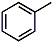
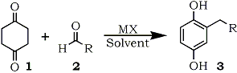
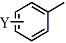

HTML by Rhodium
Reaction of 1,4-cyclohexanedione with a variety of aldehydes in the presence of metal halides generated the 2-alkylated 1,4-benzenediols in good yields without any aromatic by-products.
The 1,4-benzenediol derivatives are found not only in the naturally occurring compounds1 but also in the industrial products2. Some of the compounds are utilized extensively as the anti-oxidant chemicals3, photo-industry materials4, or polymer materials5 owing to their own chemical properties. The variation of the substituents on the aromatic ring gives desired properties to the compounds themselves and their derivatives such as liquid-crystalline polyesters derived from the aromatic compounds5. In addition, many quinones derived from the aromatic compounds are used as dienophiles in the Diels-Alder reaction6. For these reasons, the supply of 1,4-benzenediols is significant in the synthetic organic chemistry. In general, the preparations of 2-alkylated 1,4-benzenediols employ the procedures starting from 1,4-benzenediol derivatives or 1,4-quinones followed by carbon-carbon bond formation reaction. The severe reaction condition has some limitation to the side chain structure on the aromatic rings synthesized. We disclose a new synthetic method for the 2-alkylated 1,4-benzenediols starting from 1,4-cyclohexanedione and a variety of aldehydes under non-acidic condition.
Table 1.
Reactions of 1,4-cyclohexane-
dione with benzaldehyde
R | MX | Solvent | Yield |
 | LiCl | DMI | 85% |
LiBr | DMI | 72% | |
LiI | DMI | 62% | |
MgCl2 | DMI | 72% | |
LiCl | DMPU | 76% | |
LiCl | DMSO | 67% | |
LiCl | DMF | 64% | |
LiCl | HMPA | 80% | |
LiCl | TMU | 75% | |
LiCl | Pyridine | 76% |
In the course of our study on the synthesis of aromatic compounds7, the 1,4-benzenediol formation was started from 1,4-cyclohexanedione (1). Reactions of the diketone (1) with aldehydes (2) were carried out in 1,3-dimethyl-2-imidazolidinone (DMI) in the presence of lithium chloride to give monoalkylated 1,4-benzenediols (3) as shown in Scheme 1. The isolated yields of 1,4-benzenediols (3) are shown in Tables 1-3. Other metal halides such as lithium bromide, lithium iodide, or magnesium chloride can be used instead of lithium chloride in the reactions as shown in Tables 1 and 3. Although the starting diketone (2) was detected in these crude products, no polyalkylated aromatic compounds nor structural isomers concerning the side chain on the aromatic ring were found. Inspection of these Tables indicates that lithium chloride was the best catalyst in those metal halides examined. The solvent, DMI can be replaced with other polar one such as HMPA, DMF, DMSO, 1,3-dimethyltetrahydro-2(1H)-pyrimidinone (DMPU)8, 1,1,3,3-tetramethylurea (TMU), N,N,N,N-tetramethylethylenediamime (TMEDA), or pyridine. Table 1 shows that DMI, HMPA, DMPU, and pyridine gave better yield in the reaction of benzaldehyde with 1. Especially, pyridine is the most acceptable solvent when the aromatic aldehydes have an acidic substituent on their aromatic rings or in the case of aliphatic aldehyde as shown in Table 2 and 3.
Scheme 1
The conventional methods gave similar compounds by the Friedel-Crafts alkylation of 1,4-benzenediol derivatives, or by the reduction of aromatic ketones which were obtained from the Friedel-Crafts acylation reaction. The former method has a possibility to give polyalkylated aromatic compounds due to the higher reactivity of the monoalkylated aromatic ring. Further, the rearrangement reaction of an alkyl species can occur during the procedure and the resulting isomeric alkylated benzenediols can be obtained in some cases. Therefore, it is anticipated that the 1,4-benzenediols listed in Table 3 are difficult to form by the Friedel-Crafts alkylation reaction because of the rearrangement. The latter acylation method has multi-steps and can offer only the compounds which are dull against both the acidic condition and the reductive one. The proposed synthetic method allows no side reaction in any instance as mentioned above. The first step of this procedure is the aldol condensation10 between the ketone (1) and aldehydes (2). The intermediary α,β-unsaturated ketones have structures easy to isomerize to furnish the stable 1,4-benzenediols (3).
Table 3.
Reactions between 1,4-cyclohexanedione
and aliphatic aldehydes
R |
MX |
Solvent |
Yield |
-CH2Ph | LiCl | DMI | 81% |
-CH(CH3)Ph | LiCl | DMI | 74% |
-(CH2)2S-Ph | LiCl | DMI | 54% |
| -(CH2)nCH3 | |||
n = 1 | LiCl | DMI | 64% |
n = 4 | LiCl | DMI | 86% |
LiCl | HMPA | 80% | |
n = 8 | LiCl | DMI | 52% |
LiCl | Pyridine | 83% | |
LiBr | Pyridine | 63% | |
LiI | Pyridine | 67% | |
MgCl2 | Pyridine | 52% | |
MgCl2 | DMI | 66% | |
MgCl2 | DMSO | 56% | |
n = 10 | LiCl | Pyridine | 65% |
n = 20 | LiCl | Pyridine | 52% |
Table 2.
Reactions of 1,4-cyclohexanedione
with aromatic aldehydes
R |
MX |
Solvent |
Yield |
 | |||
Y = 2-Cl | LiCl | DMI | 86% |
Y = 3-Cl | LiCl | DMI | 83% |
Y = 4-Cl | LiCl | DMI | 85% |
Y = 4-NO2 |
LiCl | DMI | 59% |
Y = 4-OH | LiCl | DMPU | 37% |
Y = 4-OH | LiCl | Pyridine | 63% |
Y = 4-OH | LiCl | TMEDA | 78% |
Y = 4-COOH | LiCl | Pyridine | 61% |
3,4-(MeO)2Ph |
LiCl | DMI | 80% |
2-Pyridyl- | LiCl | DMI | 51% |
3-Pyridyl- | LiCl | DMI | 61% |
4-Pyridyl- | LiCl | DMI | 70% |
2-Furanyl | LiCl | DMI | 96% |
3-Furanyl- | LiCl | DMI | 63% |
In conclusion, 1,4-cyclohexanedione was reacted with aldehydes to give 2-alkylated 1,4-benzenediols in the presence of metal halides in one-pot with simple operation. The procedure gave no aromatic by-products such as 1,4-benzenediols with isomerized side chain or polyalkylated 1,4-benzenediols.
Typical Procedure for the Reaction between 1 and 2
A mixture of 1 (0.05 mol), 2 (0.05 mol), and metal halide (0.05 mol) in DMI (HMPA, DMF, DMSO, DMPU, or TMU) (20 ml) was heated on an oil bath with stirring at atmospheric pressure. The temperature of the bath was maintained at 160-170�C for 1 hr. When pyridine or TMEDA was used as the solvent, the reaction mixture was heated under reflux for 1 hr. The reaction mixture was poured into water and the product was extracted with ether. The organic extract was washed with brine, dried, and evaporated in vacuo. Purification of the residue was performed by column chromatography or recrystallization to give 3.